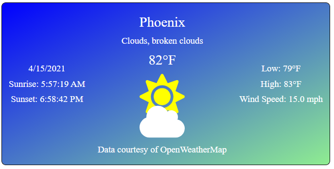
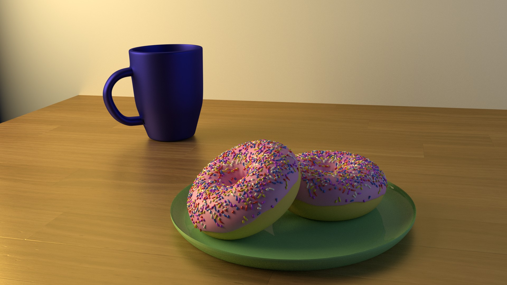
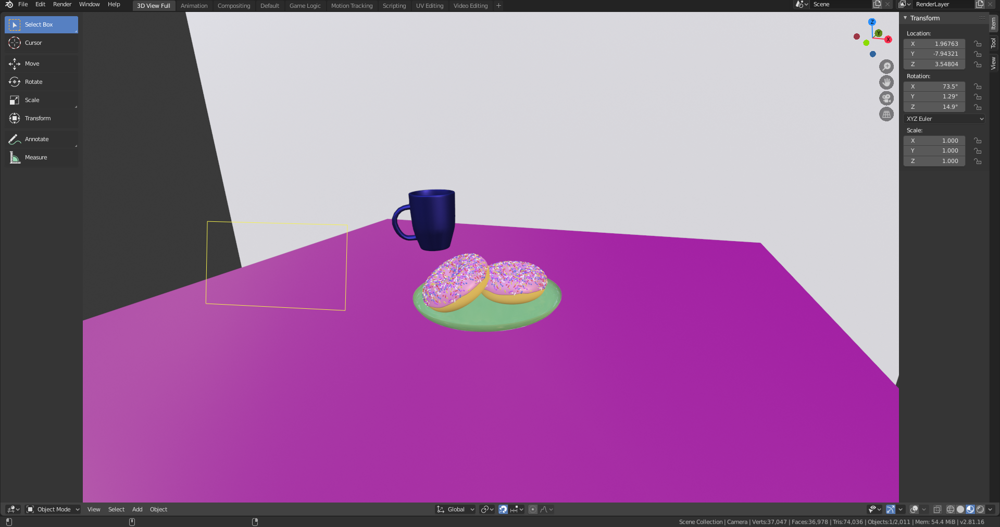
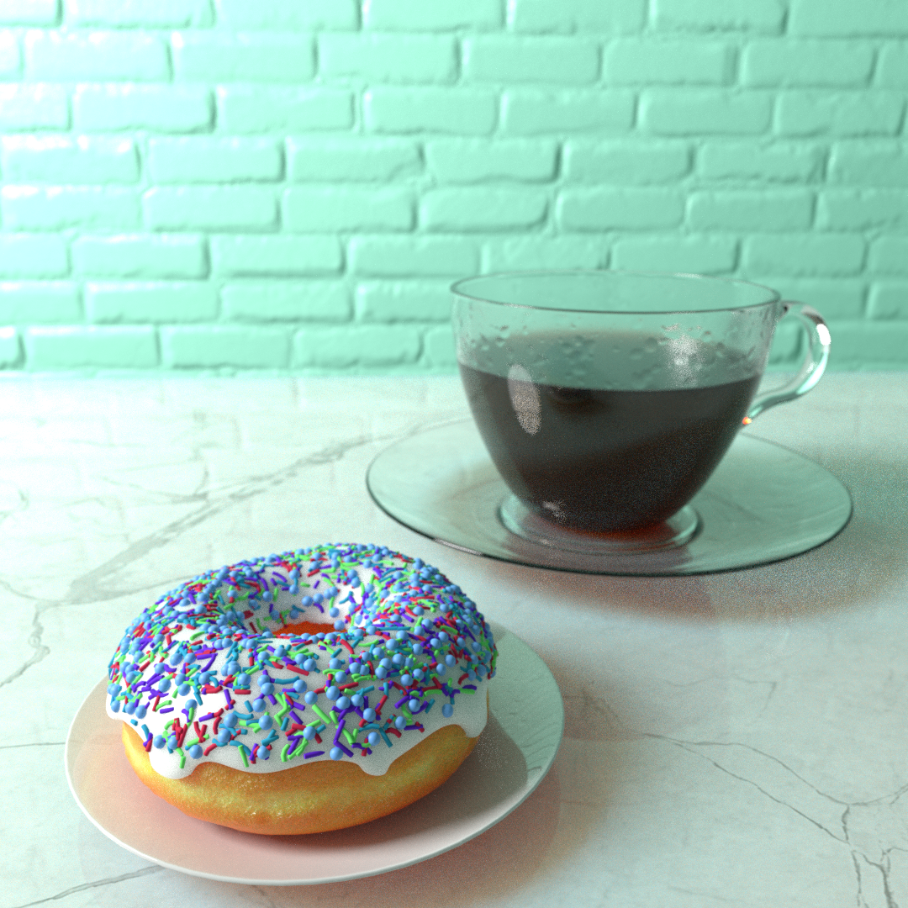
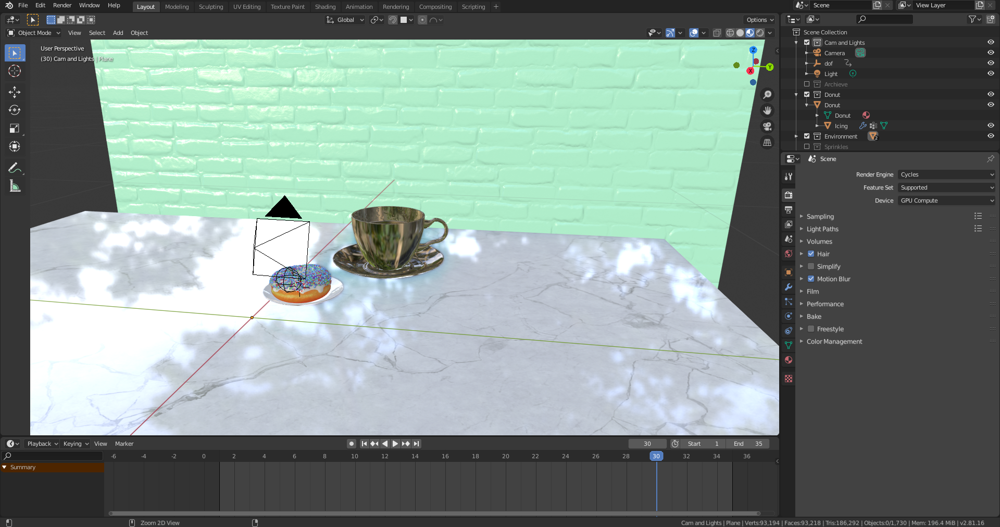

This store site was made with Django to manage the back-end such as the store products, user accounts, and blog posts and used Bootstrap to design a responsive front-end. A seperate user authentication account app was created instead of using the included Django user authentication to be able to have more flexibility managing accounts.
This Python code runs a GUI that opens up a .FITS image to so that it may be filtered before being fourier transformed and have its power spectrum plotted. This GUI was made using PyQt so that it could be interactive with the help of Matplotlib and Astropy to display the .FITS images. Additionally, this GUI allows the user open a new .FITS image to display, crop the image, select which row of the transform is plotted, debias the image, and save the values of the plot as a .DAT file.
The goal of this project was to create a GUI in Python that would talk to a motor controller in order to operate seven different alignment motors, one of which operating the grating, in our EUV tank in the lab as well as open and close a gate valve. The functions for the motor controller that were supplied had been written in C so they had to wrapped in Python accordingly. The motors move in steps except for the grating which is entered in angstroms and then converted to steps for our ease of use. Due to the reason that the position of this motor had to be calibrated before use, the user must home the grating, or set it to zero order, before being able to move it to ensure it always starts in the same place before moving. At the end of the program when the user exits the window, the log will be saved to a file with a time stamp for the next user.
This weather app made with Angular.js pulls data provided by the Open Weather Map API to display a city's weather as well as its daily forecast. The icons used were from Font Awesome's API. A sun or a moon is displayed corresponding to the current time of day.
This is an interactive periodic table that was made with React.js. When one of the elements is clicked on, it displays its properties and summary below.
This is a calculator app made with React.js.
This was a mechanical design that I designed for work in the lab. When I first took on this project, the goal was to create a mount for a EMCCD (Electron Multiplying Charged Coupled Device) provided by the JPL so that it could be flown on our sounding rocket and act as a additional camera to capture Lyman Alpha light. Specs that I had to keep in mind at the time was that it had to be light weight as to not add much weight to the rocket, it must be strong enough so that it can withstand the rocket's launch and landing impact, the design must account for resonance frequencies to avoid breaking and rolling around the rocket during launch, it had to be able to mount on existing holes within the rocket, and there needed to be room to fit the cryo-cooler and be able to move it back and forth. In the process of designing, it was decided that this mount was to be portable and hold vacuum outside of being inside the rocket. This design change brought on several specs to now take account for while maintaining the previous ones. These additional specs included placing an Aluminum dome over the entire mount that is sealed with a rubber gasket to hold vacuum, adding a valve to top of the dome to suck out inside air and seal it, placing a vacuum compatible 25-pin connector on the back to read out the EMCCD data and control its cryo-cooler,and adding a high-vacuum copper flange viewport to hold a one inch Magnesium Fluoride window allowing Lyman Alpha light to pass through. An additional piece would need to be made that attaches to the 'L' shaped CCD board holder to dampen resonance frequencies and avoid breaking under the dome. Unfortunately, the camera was unable to be piggy-backed on its targeted launch and remains in the early testing phase.

These are computer generated models that I made using Blender.
   The purpose of this personal project is to further demonstrate my knowledge of HTML and CSS.
Earthman's Kitchen